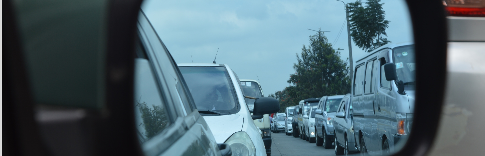

<div id="single-portfolio">
	<div id="portfolio-details" class="container">
		<a class="close-folio-item" href="#"><i class="fa fa-times"></i></a>
		
		<div class="row">
			<div class="col-sm-9">
				<div class="project-info">
					<h3>Who has time for peace anymore?</h3>
					<p>This urban startup came to us for a navigation design that would inform users of the quickest ways to navigate to a destination at any given time. It shows accidents, delays, lights, and backroad information. Navigate the city quicker and safer with City Hub, is what they wanted users to think.</p>
					<p>City Hub had already done their research so our task was to use that research to begin the branding and design process. We sketched out logo ideas for them and presented them with three different directions we could go. We chose a color palette and typography based on the mood they had for their startup. We produced low fidelity wireframes, tested them, and moved onto mockups and testing.</p>
                    <p>With the final iterations complete and the City Hub team happy, we all celebrated with a quick and safe drive around the city.</p>
				</div>
			</div>
			<div class="col-sm-3">
				<div class="project-details">
					<h3>Project Details</h3>
					<p><span>Client: </span>City Hub</p>
					<p><span>Date:</span> 15 January 2017</p>
					<p><span>Tag:</span> Branding, Iterative Design, Wireframes</p>
				</div>  
			</div>
		</div>
	</div>
</div>